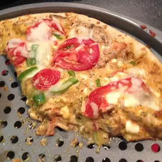

Pizza Recipe

Pizza is a dish of Italian origin consisting of a usually round
a dish made typically of flattened bread dough spread with a savory mixture usually including tomatoes and cheese and often other toppings and baked
Culinarily speaking, pizza is more of a savory galette than a pie, anyway. And yes, a savory galette is a thing, according to French cooking expert and former Chez Panisse chef David Lebovitz
Pizza Ingredient
- 75g basil pesto
- 75g mushroom, sliced
- handful cherry tomatoes, halved
- 100g ham, chopped
- handful rocket
Steps to Prepare Pizza
- Make up 300g bread mix following pack instructions
- Heat oven to 240C/220C fan/gas 8, add one of the toppings suggested below then bake for 15-20 mins until crisp
- Spread your base with the pesto. Top with ham, mushrooms, tomatoes and some seasoning
- Spread your base with passata. Top with pepperoni, chilli, green pepper and mozzarella. Season, bake as above. Sprinkle with parsley
- Put spinach into a colander, pour over a kettle of boiling water to wilt, then squeeze out any excess
- Spread your base with ricotta. Scatter over artichokes, olives and bacon. Season and bake as above
- Fry mince with onion and garlic in olive oil over a high heat for 5 mins until browned. Spread passata over your base. Top with mince mixture, tomatoes and mozzarella. Season and bake as per above